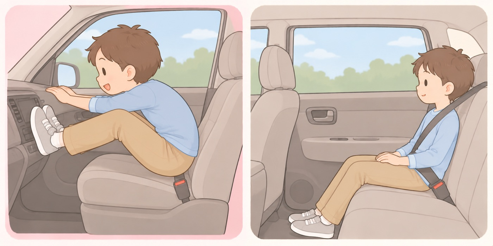

座る席を決める
助手席に座りたがったら
エアバッグは成人の体型を前提に設計されている。できるだけ後部座席に
前に座りたい、と言い出す年齢です。国土交通省と警察庁は、お子様はできるだけ後部座席に乗せるようにと呼びかけています。理由は席の好みではなく、エアバッグが成人の体型を前提に設計されていることです。

- すること：座る席を、体格で決めて家のルールにする
乗るたびに交渉になるのを避けられます。国土交通省と警察庁は、できるだけ後部座席に乗せるよう求めています。年齢ではなく体格で決める、と先に言っておきます。 - すること：助手席に座らせるなら、シートをいちばん後ろまで下げる
エアバッグが開く距離を稼ぎます。国土交通省は、助手席にチャイルドシートを取り付ける場合もシートをいちばん後ろに下げるよう求めています。背もたれを倒して寝かせません。 - しないこと：ダッシュボードに足をかけさせない。前かがみにもさせない
エアバッグが開く経路に脚や頭があると、そこに力が集中します。足を上げる、スマホを見て前に倒れる。どちらもこの年齢がいちばんやります。 - すること：肩ベルトが肩の真ん中を通るか、乗るたびに見る
首に当たるなら、まだ座面の高さが足りません。シートベルトは成人用に作られています。体格に合うまではジュニアシートを続けます（6〜9歳タブ「後部座席のシートベルト」）。 - しないこと：肩ベルトを背中や脇の下に回させない
首に当たるのを嫌がって、自分で外します。体を止めるものが腰ベルトだけになり、上半身が前に折れます。 - すること：よその車でも、同じルールで座らせる
部活や習い事の送迎で、人の車に乗る機会が増えます。座る席と締め方は、相手の車でも変えません。
エアバッグと子どもの体格（国土交通省・警察庁）
エアバッグは衝突時に乗員の被害を軽減する安全装置です。 ただし成人の体型を前提に設計されているため、 体が小さい子どもには適切に機能しないことや、被害を大きくすることがあります。
シートベルトのほうも成人用に作られています。 体格に合わないまま締めると、ベルトが首や腹部を圧迫し、 衝突時に首等に重大な傷害が発生するおそれがあります。
🛍 グッズの選び方
PR- 助手席に座らせるかどうかより先に、体格に合っているかです。身長140cm前後まではジュニアシートで座面を上げます。
- この年齢なら、背もたれを外して座面だけにできるものが使いやすくなります。見た目が子ども向けでなくなり、本人が嫌がりにくくなります。
- 身長150cmまで使える製品を選ぶと、買い替えずに済みます。適合は年齢ではなく身長で示されています。
- R129チャイルドシートの国際的な安全基準。旧基準のR44に、側面衝突の試験と身長による区分が加わっている。i-Sizeとも呼ばれる。（最新の安全基準）に適合しているかを見ます。身長で適合範囲が示され、側面衝突の試験も含まれます。
- グレコ ジュニアプラスネクスト（シートベルト固定・R129適合・3歳半頃〜12歳頃・身長150cmまで・背もたれ取り外し可）シートベルト固定。ISOFIX非対応の車でも使えるAmazonで見る →（新しいタブで開きます）
- アップリカ ライドクルーISOFIX AB（ISOFIX固定・R129適合・3歳半頃〜12歳頃・背もたれ取り外し可）背もたれを外せる。体格に合わせて変えられるAmazonで見る →（新しいタブで開きます）
- コンビ ジョイトリップ アドバンス for kids エッグショック MB（ISOFIX固定・R129対応・3歳頃から12歳頃まで・身長150cmまで）🏅 第16回キッズデザイン賞（同シリーズ ジョイトリップ アドバンス）Amazonで見る →（新しいタブで開きます）
リンクはAmazonアソシエイトリンクです。当サイトはアフィリエイトプログラムに参加しています。Amazonのアソシエイトとして、当サイトは適格販売により収入を得ています。 選び方の方針
この項目の根拠
- お子様を車に乗せる際の注意事項について（国土交通省・警察庁・PDF）（新しいタブで開きます）
シートベルトは成人用に作られているため、子供がチャイルドシートを使用せずシートベルトを装着した場合、衝突時に体を適切に保護できず首等に重大な傷害が発生するおそれがあること。シートベルトが首や腹部を圧迫すること。抱っこも大変危険で、衝突時に子供の体重を支えきれないこと。チャイルドシートは子どもの体格にあったものを選ぶこと。お子様はできるだけ後部座席に乗せるようにすること。助手席では、膨張するエアバッグにより子供に被害が及ぶ場合があること。エアバッグは衝突時に乗員の被害を軽減する安全装置だが、成人の体型を前提に設計されているため、体が小さい子供には適切に機能しないことや、被害を大きくすることがあること。助手席にチャイルドシートを取り付ける場合は、助手席のシートを一番後ろに下げて前向きに取り付けること。助手席に後ろ向きチャイルドシートを取り付けることは危険であること。国の安全基準への適合が確認されたチャイルドシートにはEマークなどの表示があること。 - 全ての座席でシートベルトを着用しましょう（警察庁）（新しいタブで開きます）
シートベルトを備えている自動車を運転するときは、運転者自身が着用するとともに、助手席や後部座席の同乗者にも着用させなければならないこと（道路交通法第71条の3第2項）。後部座席でのシートベルトの着用は全ての道路で義務であること。シートベルトは正しく着用しなければ効果がないこと。後部座席シートベルト非着用時の致死率は、高速道路で着用時の約13.9倍、一般道路で着用時の約2.8倍も高いこと。 - 子供を守るチャイルドシート（警察庁）（新しいタブで開きます）
6歳以上の子供であっても、体格等の事情によりシートベルトを適切に着用させることができない場合は、チャイルドシートを使用すること。チャイルドシート不使用者の致死率は適正使用者の約5.3倍であること。